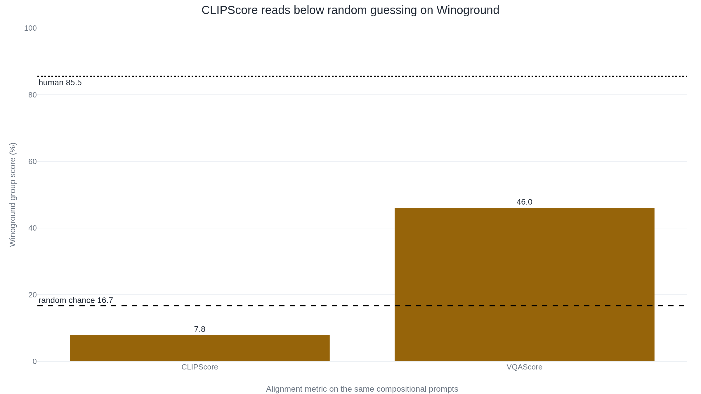

CLIPScore scores below chance when a caption's words are swapped
Text-to-image papers trust it to check prompt alignment, but the human-correlation numbers behind that trust were measured on image captioning, a different task where the score is far stronger.
Why this matters
Nearly every paper that builds a text-to-image model reports a number for how well its pictures follow the prompt, and for years the number has usually been CLIPScore. It is fast, it needs no human-written answer to compare against, and it decides real things: which of two systems a leaderboard ranks higher, and which sample a training run keeps. This lesson follows what that number is actually made of, from the two vectors it compares to the single similarity it scales into a grade. Then it shows where the grade misleads: on the swaps it is meant to catch, on the task it was never checked on, and on what happens when a model is trained to raise it. By the end you will know why a high CLIPScore does not promise a picture that matches its prompt.
- 01
- CLIP: the model whose image-text judgment CLIPScore reads a number out of.
- 02
- Attribute binding: why an image generator puts a prompt's colors on the wrong objects.
- 03
- LLM as a judge: the wider practice of scoring one model's output with another model.
- 04
- Counting objects in images: one of the specific tasks CLIP is weak at, and passes that weakness on.
A number for how well a picture follows its prompt
Ask a text-to-image system for "a red cube on a blue sphere." You get back a picture, and you want to know whether it drew the prompt or something else. The honest check is to show it to people and ask, but people are slow and expensive, and a training run generates thousands of images an hour. CLIPScore is the number the field reaches for instead. It is a model's opinion of another model's output, standing in for a person's. Hand it the prompt and the picture, and it returns a grade for how well they match, with no human-written caption needed as an answer key.1 That last property has a name, reference-free, and it is most of why the score caught on: you can run it on any generated image the moment it exists.
The opinion it reports is not its own. CLIPScore reads it out of CLIP, a model trained to tell whether an image and a caption belong together. So the grade is only ever as good as CLIP's judgment of image-text fit, and every strength and blind spot below is CLIP's, inherited whole. This is a different question from whether a generated image looks real, which FID and the Inception Score measure. CLIPScore says nothing about realism and those say nothing about the prompt. It grades the match.
One cosine, clipped and stretched
CLIP is two encoders trained together, one for images and one for text, on about 400 million image-caption pairs scraped from the web.2 The training pulls each true pair's image vector and text vector close together and pushes mismatched pairs apart, until both encoders write into one shared space where nearness means "these go together." Once trained, the encoders turn any image and any caption into two vectors in that space. The closeness of two vectors is their cosine similarity: one number, near 1 when they point the same way and near 0 when they are unrelated.
CLIPScore is that cosine, lightly dressed. Hessel and coauthors, who named it in 2021, take the cosine between the prompt's text vector and the image's vector, clip anything negative up to zero, and multiply by a fixed 2.5.1
- \cos(c, v)The cosine similarity of the caption vector and the image vector: how close CLIP places them in its shared space.
- \maxClip a negative similarity up to zero, so a mismatch bottoms out instead of going below zero.
- 2.5A fixed stretch that widens CLIP's narrow raw range, roughly 0 to 0.4, toward a 0-to-1 scale. It moves the numbers, not the ranking.
That is the whole construction. There is a variant, RefCLIPScore, that also compares the image against human reference captions when you have them,1 but the version people report for generated images is the reference-free one above, because generated images arrive without a reference. Everything the grade knows, it knows through that one cosine.
Checked on captions, trusted on generations
A number is only worth reporting if it agrees with the people it stands in for, so Hessel and coauthors measured that agreement. On Flickr8K-Expert, a set of real photographs with human ratings of candidate captions, CLIPScore ranked the captions the way expert raters did, at a Kendall correlation of 51.2.1 That beat the older CIDEr (43.9) and SPICE (44.9) scores, which need reference captions. A correlation of 100 would be perfect agreement and 0 no relationship at all, so 51.2 puts the score and the raters just over halfway there. That result, fast and reference-free and closer to humans than the alternatives, is why CLIPScore spread.
But it was measured on one task in particular: captions written for real photographs, the image-captioning task the paper set out to serve. The job it now does is the reverse. A text-to-image score starts from the prompt and grades a generated image, and a survey of the field lists CLIPScore as one of the first reference-free alignment scores that everyone reached for once diffusion models arrived.3 The 51.2 traveled to the new task as if it came along with the metric. It did not. Hu and coauthors built a benchmark of generated images with human faithfulness ratings, and CLIPScore's agreement with those ratings fell to a Spearman correlation of 33.2.4 That is close to SPICE again, and well under the 59.7 their own metric reached. The credential that earned CLIPScore its trust was never collected on the task the trust is spent on, and where someone did collect it, the number is far lower.
Which object got which color
Go back to "a red cube on a blue sphere." Swap the colors and you have "a blue cube on a red sphere": the same words, a different picture. Telling the two prompts apart is the test of attribute binding, keeping track of which adjective belongs to which noun, and it is exactly what CLIP's text encoder tends to drop. The authors of VQAScore put it flatly: CLIP's text encoders "can notoriously act as a 'bag of words', conflating prompts such as 'the horse is eating the grass' with 'the grass is eating the horse'."5
The controlled measurements bear that out. On a benchmark that makes CLIP choose the right caption against a hard negative with one thing swapped, it scores about 63% when a relation is swapped and about 62% when an attribute is, both barely above the 50% a coin would get.6 Reorder a whole caption and it does no better, near 46% on the reordered-caption test.6 This is insufficient sensitivity rather than total blindness. The same authors shuffled every word in a caption and asked CLIP to retrieve the right image.6 Accuracy dropped from 50.3% to 34.1%, a real fall, just a much smaller one than scrambling a sentence should cause. CLIP notices word order a little. It does not weigh it the way a reader does.
A weak grader is worse than no grader when it grades below chance. Winoground pairs two images with two captions built from the same words, and a model earns a point on its group metric only by matching both correctly. Pure guessing scores about 16.7%, one in six. CLIPScore reaches 7.8%, under half of chance. VQAScore, which checks alignment by asking a question-answering model whether the image shows the prompt, reaches 46.0% on the same prompts.5

Word order is one inherited blind spot. The rest come with it. CLIP "struggles with more abstract and systematic tasks such as counting the number of objects in an image," its own authors report,2 so a CLIPScore cannot reliably tell four apples from five. And because it learned from uncurated web pairs, it carries their biases, which the CLIPScore authors flag directly in closing.1 A single similarity number folds all of this into one figure that looks decisive and hides which part it got wrong.
What happens when the grade becomes the goal
Those failures all come from reading a CLIPScore. A sharper one appears when a system is built to raise it, because then any gap between the score and real matching becomes something to exploit. The FuseDream authors showed the gap directly: starting from an image and taking one small adversarial step, a perturbation too slight to see, they found a near-identical picture with a much higher CLIP score and no more real relevance to the prompt.7 Optimize the number hard enough and the number is what you get, which the authors name a danger of overfitting to the score.7
The same gap opens in the gentler act of picking. Generate several images and keep the one with the highest CLIPScore, and you are selecting for CLIP's taste, not the viewer's. The Pick-a-Pic authors measured how far apart those are. On held-out pairs where real users had chosen the image they preferred, an off-the-shelf CLIP model agreed with the human choice 60.8% of the time. PickScore, a CLIP model fine-tuned on those same choices, agreed 70.5% of the time, past even the 68.0% at which human experts agreed with each other.8 The roughly ten-point gap between the stock CLIP score and the tuned one is the cost of selecting by CLIP's preferences: a best-of-N chosen that way is the best in CLIP's opinion, which is measurably not the reader's.
The takeaway
CLIPScore is one cosine similarity from CLIP, clipped and scaled into a grade for how well an image matches a prompt. It is fast and needs no answer key, and that convenience is real. But it grades with CLIP's judgment, and inherits CLIP's limits. It barely registers which object in a prompt got which color. It scores below chance on the compositional swaps it is asked to catch. Pushed on as a training reward or a selection rule, it rewards CLIP's preferences over a person's. The human-correlation figure that made it standard was earned grading captions for real photos, not the generated images it is now spent on, where its agreement with people is far lower. When you meet a CLIPScore, take it as a fast estimate of gross image-text fit, not a verdict on prompt alignment, and read it next to a metric like VQAScore or TIFA that fails in a different way.
- 01
- Hartwig et al., "A Survey on Quality Metrics for Text-to-Image Generation": the full map of the alignment scores built to route around CLIPScore.
- 02
- Lin et al., "Evaluating Text-to-Visual Generation with Image-to-Text Generation": how VQAScore turns a question-answering model into the alignment check.
Sources
- arXiv · Hessel, Holtzman, Forbes, Le Bras & Choi, "CLIPScore: A Reference-free Evaluation Metric for Image Captioning" (EMNLP 2021)
- arXiv · Radford et al., "Learning Transferable Visual Models From Natural Language Supervision" (CLIP, 2021)
- arXiv · Hartwig et al., "A Survey on Quality Metrics for Text-to-Image Generation" (2024)
- arXiv · Hu et al., "TIFA: Accurate and Interpretable Text-to-Image Faithfulness Evaluation with Question Answering" (ICCV 2023)
- arXiv · Lin et al., "Evaluating Text-to-Visual Generation with Image-to-Text Generation" (VQAScore, ECCV 2024)
- arXiv · Yuksekgonul, Bianchi, Kalluri, Jurafsky & Zou, "When and why vision-language models behave like bags-of-words, and what to do about it?" (ICLR 2023)
- arXiv · Liu et al., "FuseDream: Training-Free Text-to-Image Generation with Improved CLIP+GAN Space Optimization" (2021)
- arXiv · Kirstain, Polyak, Singer, Matiana, Penna & Levy, "Pick-a-Pic: An Open Dataset of User Preferences for Text-to-Image Generation" (PickScore, NeurIPS 2023)